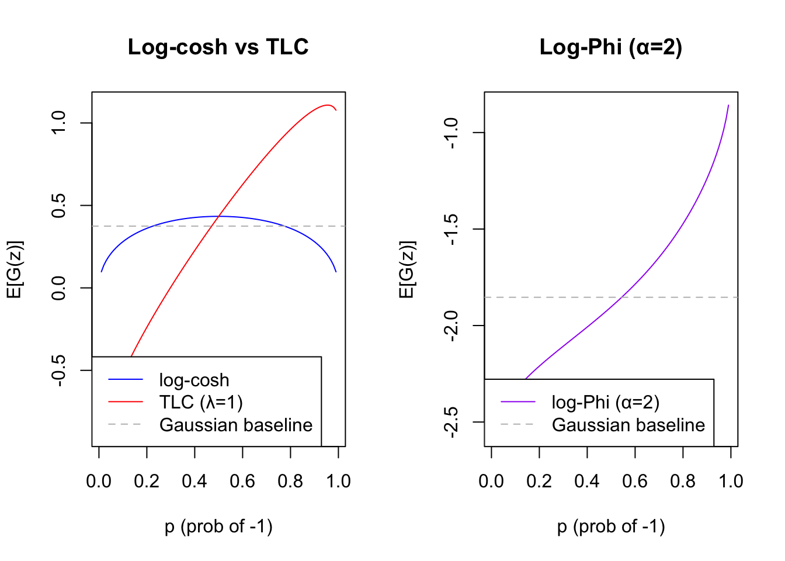
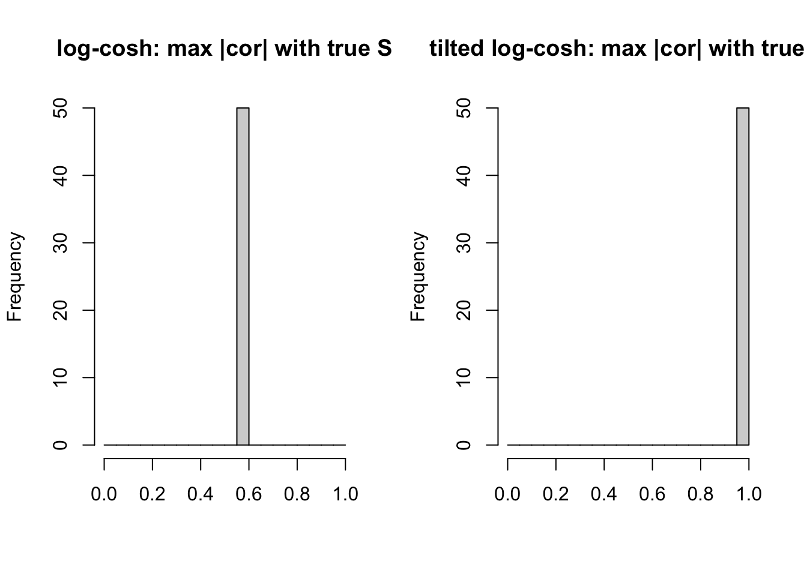
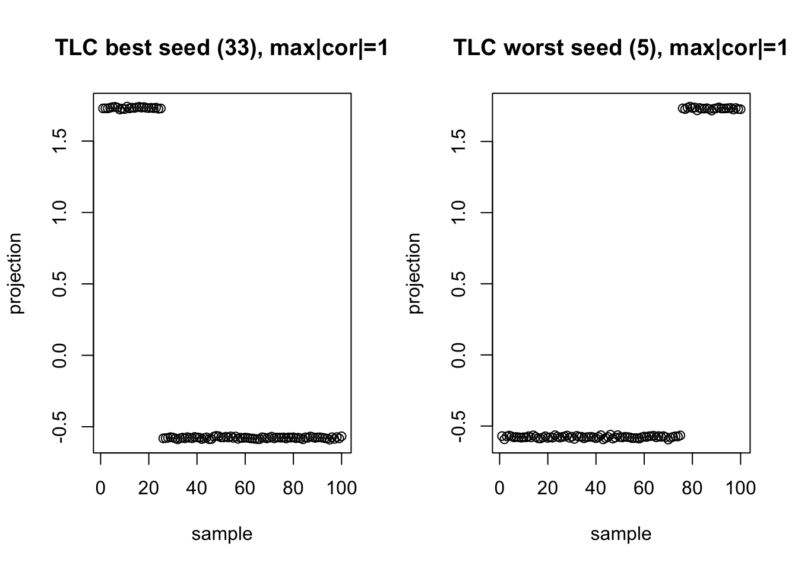
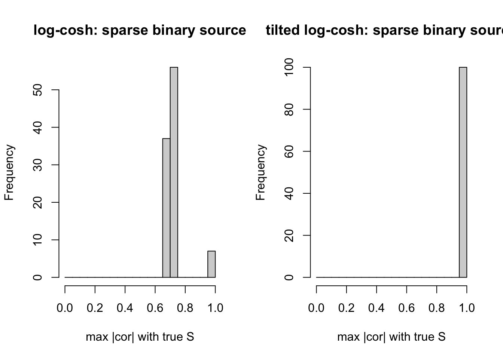
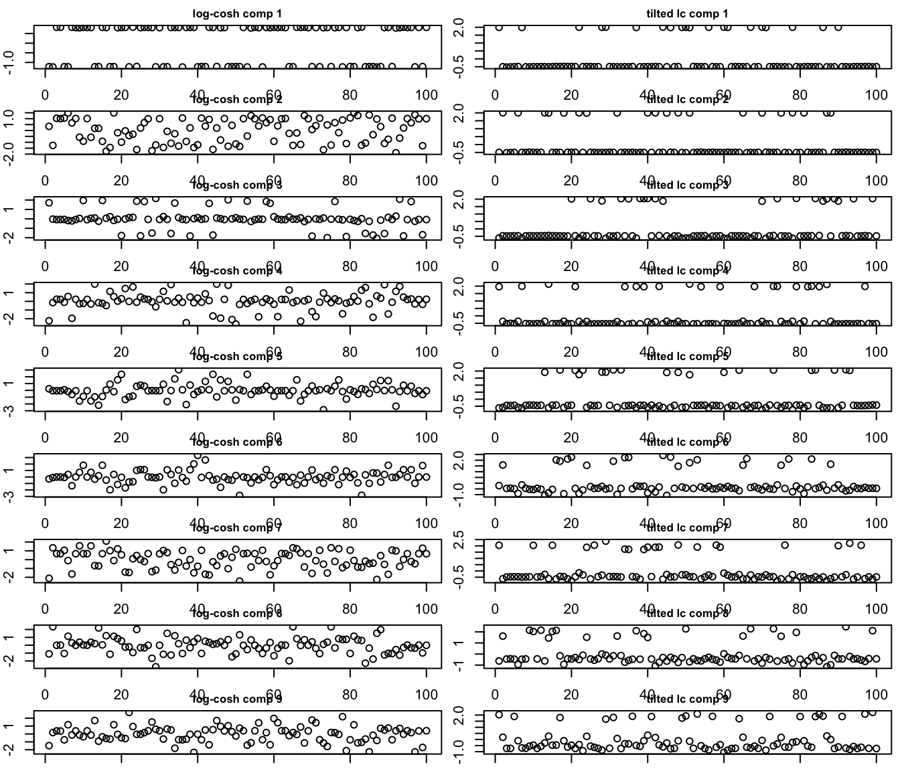

Last updated: 2026-07-16
Checks: 7 0
Knit directory: misc/analysis/
This reproducible R Markdown analysis was created with workflowr (version 1.7.2). The Checks tab describes the reproducibility checks that were applied when the results were created. The Past versions tab lists the development history.
Great! Since the R Markdown file has been committed to the Git repository, you know the exact version of the code that produced these results.
Great job! The global environment was empty. Objects defined in the global environment can affect the analysis in your R Markdown file in unknown ways. For reproduciblity it’s best to always run the code in an empty environment.
The command set.seed(1) was run prior to running the code in the R Markdown file. Setting a seed ensures that any results that rely on randomness, e.g. subsampling or permutations, are reproducible.
Great job! Recording the operating system, R version, and package versions is critical for reproducibility.
Nice! There were no cached chunks for this analysis, so you can be confident that you successfully produced the results during this run.
Great job! Using relative paths to the files within your workflowr project makes it easier to run your code on other machines.
Great! You are using Git for version control. Tracking code development and connecting the code version to the results is critical for reproducibility.
The results in this page were generated with repository version cf3bf2f. See the Past versions tab to see a history of the changes made to the R Markdown and HTML files.
Note that you need to be careful to ensure that all relevant files for the analysis have been committed to Git prior to generating the results (you can use wflow_publish or wflow_git_commit). workflowr only checks the R Markdown file, but you know if there are other scripts or data files that it depends on. Below is the status of the Git repository when the results were generated:
Ignored files:
Ignored: .DS_Store
Ignored: .Rhistory
Ignored: .Rproj.user/
Ignored: .claude/
Ignored: GSE87571/
Ignored: analysis/.RData
Ignored: analysis/.Rhistory
Ignored: analysis/ALStruct_cache/
Ignored: analysis/figure/
Ignored: data/.Rhistory
Ignored: data/methylation-data-for-matthew.rds
Ignored: data/pbmc/
Ignored: data/pbmc_purified.RData
Untracked files:
Untracked: .dropbox
Untracked: GSE41037/
Untracked: Icon
Untracked: analysis/GHstan.Rmd
Untracked: analysis/GTEX-cogaps.Rmd
Untracked: analysis/PACS.Rmd
Untracked: analysis/Rplot.png
Untracked: analysis/SPCAvRP.rmd
Untracked: analysis/abf_comparisons.Rmd
Untracked: analysis/admm_02.Rmd
Untracked: analysis/admm_03.Rmd
Untracked: analysis/bispca.Rmd
Untracked: analysis/cache/
Untracked: analysis/cholesky.Rmd
Untracked: analysis/compare-transformed-models.Rmd
Untracked: analysis/cormotif.Rmd
Untracked: analysis/cp_ash.Rmd
Untracked: analysis/eQTL.perm.rand.pdf
Untracked: analysis/eb_power2.Rmd
Untracked: analysis/eb_prepilot.Rmd
Untracked: analysis/eb_var.Rmd
Untracked: analysis/ebpmf1.Rmd
Untracked: analysis/ebpmf_sla_text.Rmd
Untracked: analysis/ebspca_sims.Rmd
Untracked: analysis/explore_psvd.Rmd
Untracked: analysis/fa_check_identify.Rmd
Untracked: analysis/fa_iterative.Rmd
Untracked: analysis/fastica_heated.Rmd
Untracked: analysis/flash_cov_overlapping_groups_init.Rmd
Untracked: analysis/flash_test_tree.Rmd
Untracked: analysis/flashier_newgroups.Rmd
Untracked: analysis/flashier_nmf_triples.Rmd
Untracked: analysis/flashier_pbmc.Rmd
Untracked: analysis/flashier_snn_shifted_prior.Rmd
Untracked: analysis/greedy_ebpmf_exploration_00.Rmd
Untracked: analysis/ieQTL.perm.rand.pdf
Untracked: analysis/lasso_em_03.Rmd
Untracked: analysis/m6amash.Rmd
Untracked: analysis/mash_bhat_z.Rmd
Untracked: analysis/mash_ieqtl_permutations.Rmd
Untracked: analysis/matrix_beta.Rmd
Untracked: analysis/meth_flash_01.Rmd
Untracked: analysis/methylation_example.Rmd
Untracked: analysis/mixsqp.Rmd
Untracked: analysis/mr.ash_lasso_init.Rmd
Untracked: analysis/mr.mash.test.Rmd
Untracked: analysis/mr_ash_modular.Rmd
Untracked: analysis/mr_ash_parameterization.Rmd
Untracked: analysis/mr_ash_ridge.Rmd
Untracked: analysis/mv_gaussian_message_passing.Rmd
Untracked: analysis/nejm.Rmd
Untracked: analysis/nmf_bg.Rmd
Untracked: analysis/nonneg_underapprox.Rmd
Untracked: analysis/normal_conditional_on_r2.Rmd
Untracked: analysis/normalize.Rmd
Untracked: analysis/pbmc.Rmd
Untracked: analysis/pca_binary_weighted.Rmd
Untracked: analysis/pca_l1.Rmd
Untracked: analysis/poisson_nmf_approx.Rmd
Untracked: analysis/poisson_shrink.Rmd
Untracked: analysis/poisson_transform.Rmd
Untracked: analysis/qrnotes.txt
Untracked: analysis/ridge_iterative_02.Rmd
Untracked: analysis/ridge_iterative_splitting.Rmd
Untracked: analysis/samps/
Untracked: analysis/sc_bimodal.Rmd
Untracked: analysis/shrinkage_comparisons_changepoints.Rmd
Untracked: analysis/susie_cov.Rmd
Untracked: analysis/susie_en.Rmd
Untracked: analysis/susie_z_investigate.Rmd
Untracked: analysis/svd-timing.Rmd
Untracked: analysis/temp.RDS
Untracked: analysis/temp.Rmd
Untracked: analysis/test-figure/
Untracked: analysis/test.Rmd
Untracked: analysis/test.Rpres
Untracked: analysis/test.md
Untracked: analysis/test_qr.R
Untracked: analysis/test_sparse.Rmd
Untracked: analysis/tree_dist_top_eigenvector.Rmd
Untracked: analysis/z.txt
Untracked: code/coordinate_descent_symNMF.R
Untracked: code/multivariate_testfuncs.R
Untracked: code/rqb.hacked.R
Untracked: data/4matthew/
Untracked: data/4matthew2/
Untracked: data/E-MTAB-2805.processed.1/
Untracked: data/ENSG00000156738.Sim_Y2.RDS
Untracked: data/GDS5363_full.soft.gz
Untracked: data/GSE41265_allGenesTPM.txt
Untracked: data/Muscle_Skeletal.ACTN3.pm1Mb.RDS
Untracked: data/P.rds
Untracked: data/Thyroid.FMO2.pm1Mb.RDS
Untracked: data/bmass.HaemgenRBC2016.MAF01.Vs2.MergedDataSources.200kRanSubset.ChrBPMAFMarkerZScores.vs1.txt.gz
Untracked: data/bmass.HaemgenRBC2016.Vs2.NewSNPs.ZScores.hclust.vs1.txt
Untracked: data/bmass.HaemgenRBC2016.Vs2.PreviousSNPs.ZScores.hclust.vs1.txt
Untracked: data/eb_prepilot/
Untracked: data/finemap_data/fmo2.sim/b.txt
Untracked: data/finemap_data/fmo2.sim/dap_out.txt
Untracked: data/finemap_data/fmo2.sim/dap_out2.txt
Untracked: data/finemap_data/fmo2.sim/dap_out2_snp.txt
Untracked: data/finemap_data/fmo2.sim/dap_out_snp.txt
Untracked: data/finemap_data/fmo2.sim/data
Untracked: data/finemap_data/fmo2.sim/fmo2.sim.config
Untracked: data/finemap_data/fmo2.sim/fmo2.sim.k
Untracked: data/finemap_data/fmo2.sim/fmo2.sim.k4.config
Untracked: data/finemap_data/fmo2.sim/fmo2.sim.k4.snp
Untracked: data/finemap_data/fmo2.sim/fmo2.sim.ld
Untracked: data/finemap_data/fmo2.sim/fmo2.sim.snp
Untracked: data/finemap_data/fmo2.sim/fmo2.sim.z
Untracked: data/finemap_data/fmo2.sim/pos.txt
Untracked: data/logm.csv
Untracked: data/m.cd.RDS
Untracked: data/m.cdu.old.RDS
Untracked: data/m.new.cd.RDS
Untracked: data/m.old.cd.RDS
Untracked: data/mainbib.bib.old
Untracked: data/mat.csv
Untracked: data/mat.txt
Untracked: data/mat_new.csv
Untracked: data/matrix_lik.rds
Untracked: data/paintor_data/
Untracked: data/running_data_chris.csv
Untracked: data/running_data_matthew.csv
Untracked: data/temp.txt
Untracked: data/y.txt
Untracked: data/y_f.txt
Untracked: data/zscore_jointLCLs_m6AQTLs_susie_eQTLpruned.rds
Untracked: data/zscore_jointLCLs_random.rds
Untracked: explore_udi.R
Untracked: output/fit.k10.rds
Untracked: output/fit.nn.pbmc.purified.rds
Untracked: output/fit.nn.rds
Untracked: output/fit.nn.s.001.rds
Untracked: output/fit.nn.s.01.rds
Untracked: output/fit.nn.s.1.rds
Untracked: output/fit.nn.s.10.rds
Untracked: output/fit.snn.s.001.rds
Untracked: output/fit.snn.s.01.nninit.rds
Untracked: output/fit.snn.s.01.rds
Untracked: output/fit.varbvs.RDS
Untracked: output/fit2.nn.pbmc.purified.rds
Untracked: output/glmnet.fit.RDS
Untracked: output/snn07.txt
Untracked: output/snn34.txt
Untracked: output/test.bv.txt
Untracked: output/test.gamma.txt
Untracked: output/test.hyp.txt
Untracked: output/test.log.txt
Untracked: output/test.param.txt
Untracked: output/test2.bv.txt
Untracked: output/test2.gamma.txt
Untracked: output/test2.hyp.txt
Untracked: output/test2.log.txt
Untracked: output/test2.param.txt
Untracked: output/test3.bv.txt
Untracked: output/test3.gamma.txt
Untracked: output/test3.hyp.txt
Untracked: output/test3.log.txt
Untracked: output/test3.param.txt
Untracked: output/test4.bv.txt
Untracked: output/test4.gamma.txt
Untracked: output/test4.hyp.txt
Untracked: output/test4.log.txt
Untracked: output/test4.param.txt
Untracked: output/test5.bv.txt
Untracked: output/test5.gamma.txt
Untracked: output/test5.hyp.txt
Untracked: output/test5.log.txt
Untracked: output/test5.param.txt
Unstaged changes:
Modified: .gitignore
Modified: analysis/eb_snmu.Rmd
Modified: analysis/ebnm_binormal.Rmd
Modified: analysis/ebpower.Rmd
Modified: analysis/flashier_log1p.Rmd
Modified: analysis/flashier_sla_text.Rmd
Modified: analysis/logistic_z_scores.Rmd
Modified: analysis/mr_ash_pen.Rmd
Modified: analysis/nmu_em.Rmd
Modified: analysis/susie_flash.Rmd
Modified: analysis/tap_free_energy.Rmd
Modified: misc.Rproj
Note that any generated files, e.g. HTML, png, CSS, etc., are not included in this status report because it is ok for generated content to have uncommitted changes.
These are the previous versions of the repository in which changes were made to the R Markdown (analysis/fastica_skew.Rmd) and HTML (docs/fastica_skew.html) files. If you’ve configured a remote Git repository (see ?wflow_git_remote), click on the hyperlinks in the table below to view the files as they were in that past version.
| File | Version | Author | Date | Message |
|---|---|---|---|---|
| Rmd | cf3bf2f | Matthew Stephens | 2026-07-16 | Add noise to tests, 9-component plots |
| html | 7da05b8 | Matthew Stephens | 2026-07-16 | Build site. |
| Rmd | 159d466 | Matthew Stephens | 2026-07-16 | Add tilted log-cosh FastICA analysis |
This implements and tests the “Tilted Log-Cosh” (TLC) contrast function for FastICA, motivated by the paper skew_fastICA.pdf. The standard log-cosh contrast fails to detect highly skewed (sparse) binary sources because its expectation falls below the Gaussian baseline as \(p \to 0\) or \(p \to 1\). The tilted version adds a \(\lambda z|z|\) term:
\[G(z) = \log(\cosh(z)) + \lambda z|z|\]
with derivatives: \[g(z) = \tanh(z) + 2\lambda|z|, \quad g'(z) = 1 - \tanh^2(z) + 2\lambda \text{sign}(z)\]
The odd term \(z|z|\) has expectation \(2p-1\) for a standardized binary source, so the tilted objective monotonically increases as \(p \to 1\), unlike log-cosh which peaks at \(p=0.5\).
# Standard log-cosh FastICA (single component, rank-1 update)
fastica_r1update = function(X, w) {
w = w / sqrt(sum(w^2))
P = t(X) %*% w
G = tanh(P)
G2 = 1 - tanh(P)^2
w = X %*% G - mean(G2) * ncol(X) * w
w / sqrt(sum(w^2))
}
compute_objective = function(X, w) {
P = t(X) %*% w
mean(log(cosh(P)))
}
# Tilted log-cosh FastICA (single component)
fastica_r1update_tlc = function(X, w, lambda = 1) {
w = w / sqrt(sum(w^2))
P = t(X) %*% w
G = tanh(P) + 2 * lambda * abs(P)
G2 = 1 - tanh(P)^2 + 2 * lambda * sign(P)
w = X %*% G - mean(G2) * ncol(X) * w
w / sqrt(sum(w^2))
}
compute_objective_tlc = function(X, w, lambda = 1) {
P = t(X) %*% w
mean(log(cosh(P)) + lambda * abs(P) * P)
}
prewhiten = function(X, n.comp) {
X = X - rowMeans(X)
sqrt(ncol(X)) * t(svd(X)$v[, 1:n.comp])
}
run_seeds = function(X, S_true, update_fn, obj_fn, n_seeds = 50, n_iter = 200, ...) {
obj = numeric(n_seeds)
maxcor = numeric(n_seeds)
for (seed in seq_len(n_seeds)) {
set.seed(seed)
w = rnorm(nrow(X))
for (i in seq_len(n_iter))
w = update_fn(X, w, ...)
obj[seed] = obj_fn(X, w, ...)
maxcor[seed] = max(abs(cor(t(S_true), t(X) %*% w)))
}
list(obj = obj, maxcor = maxcor)
}# E[log(cosh(z))] for a standardized binary source with P(x=-1)=p
expected_logcosh = function(p) {
z_neg = -sqrt((1 - p) / p)
z_pos = sqrt(p / (1 - p))
p * log(cosh(z_neg)) + (1 - p) * log(cosh(z_pos))
}
expected_tlc = function(p, lambda = 1) {
expected_logcosh(p) + lambda * (2 * p - 1)
}
log_cosh_stable = function(z) abs(z) + log1p(exp(-2 * abs(z))) - log(2)
gaussian_baseline = integrate(function(z) log_cosh_stable(z) * dnorm(z), -Inf, Inf)$value
pvec = seq(0.01, 0.99, by = 0.01)
lc = sapply(pvec, expected_logcosh)
tlc = sapply(pvec, expected_tlc)
plot(pvec, lc, type = "l", col = "blue", ylim = range(c(lc, tlc)),
xlab = "p (prob of -1)", ylab = "E[G(z)]",
main = "Log-cosh vs Tilted Log-Cosh for binary source")
lines(pvec, tlc, col = "red")
abline(h = gaussian_baseline, lty = 2, col = "gray")
legend("bottomleft", c("log-cosh", "tilted log-cosh (λ=1)", "Gaussian baseline"),
col = c("blue","red","gray"), lty = c(1,1,2))
| Version | Author | Date |
|---|---|---|
| 7da05b8 | Matthew Stephens | 2026-07-16 |
Standard log-cosh falls below the Gaussian baseline for skewed sources. The tilted version increases monotonically toward the sparse extreme.
The simplest case: a single Rademacher source (-1 or +1 with equal probability). Both methods should work here since log-cosh peaks at p=0.5.
set.seed(10)
n = 200
p = 1000
k = 1
A = matrix(rnorm(p * k), nrow = p)
S_rad = matrix(sample(c(-1, 1), n, replace = TRUE), nrow = 1)
sigma = 0.1
X_rad = A %*% S_rad + matrix(rnorm(p * n, 0, sigma), nrow = p)
Z_rad = sqrt(n) * t(svd(X_rad)$v[, 1:k, drop = FALSE])
res_lc_rad = run_seeds(Z_rad, S_rad, fastica_r1update, compute_objective, n_seeds = 50)
res_tlc_rad = run_seeds(Z_rad, S_rad, fastica_r1update_tlc, compute_objective_tlc, n_seeds = 50)
cat("log-cosh : mean max|cor| =", round(mean(res_lc_rad$maxcor), 3),
" fraction > 0.9:", mean(res_lc_rad$maxcor > 0.9), "\n")log-cosh : mean max|cor| = 1 fraction > 0.9: 1 cat("tilted lc : mean max|cor| =", round(mean(res_tlc_rad$maxcor), 3),
" fraction > 0.9:", mean(res_tlc_rad$maxcor > 0.9), "\n")tilted lc : mean max|cor| = 1 fraction > 0.9: 1 Here we have 4 non-overlapping groups of 25 samples each in n=100, so each source is active for 25% of samples (p=0.25). Without noise the 4 groups would perfectly partition all samples, making the centered data rank k-1 and the k-th whitened component the constant direction. The added noise breaks this exact rank deficiency.
set.seed(1)
n = 100
p = 1000
k = 4
A = matrix(rnorm(p * k), nrow = p)
S = matrix(0, nrow = k, ncol = n)
S[1, 1:25] = 1
S[2, 26:50] = 1
S[3, 51:75] = 1
S[4, 76:100] = 1
sigma = 0.1
X = A %*% S + matrix(rnorm(p * n, 0, sigma), nrow = p)
Z = prewhiten(X, k)
res_lc = run_seeds(Z, S, fastica_r1update, compute_objective)
res_tlc = run_seeds(Z, S, fastica_r1update_tlc, compute_objective_tlc)
par(mfrow = c(1, 2))
hist(res_lc$maxcor, breaks = seq(0, 1, by = 0.05), main = "log-cosh: max |cor| with true S", xlab = "")
hist(res_tlc$maxcor, breaks = seq(0, 1, by = 0.05), main = "tilted log-cosh: max |cor| with true S", xlab = "")
| Version | Author | Date |
|---|---|---|
| 7da05b8 | Matthew Stephens | 2026-07-16 |
par(mfrow = c(1, 1))Best and worst seeds for tilted log-cosh on Test 2:
get_projection = function(X, seed, update_fn, n_iter = 200, ...) {
set.seed(seed)
w = rnorm(nrow(X))
for (i in seq_len(n_iter))
w = update_fn(X, w, ...)
as.vector(t(X) %*% w)
}
best_seed = which.max(res_tlc$maxcor)
worst_seed = which.min(res_tlc$maxcor)
proj_best = get_projection(Z, best_seed, fastica_r1update_tlc)
proj_worst = get_projection(Z, worst_seed, fastica_r1update_tlc)
par(mfrow = c(1, 2))
plot(proj_best, main = paste0("TLC best seed (", best_seed, "), max|cor|=",
round(res_tlc$maxcor[best_seed], 3)), xlab = "sample", ylab = "projection")
plot(proj_worst, main = paste0("TLC worst seed (", worst_seed, "), max|cor|=",
round(res_tlc$maxcor[worst_seed], 3)), xlab = "sample", ylab = "projection")
| Version | Author | Date |
|---|---|---|
| 7da05b8 | Matthew Stephens | 2026-07-16 |
par(mfrow = c(1, 1))Here the true source takes value 1 with probability 0.2. From the theoretical plot, p=0.2 is near where E[log(cosh(z))] is closest to the Gaussian baseline, making it hard for standard log-cosh to distinguish the source from Gaussian noise.
set.seed(2)
n = 500
p = 1000
k = 4
prob_active = 0.2 # 20% of samples are "on" per source
A = matrix(rnorm(p * k), nrow = p)
S_sparse = matrix(0, nrow = k, ncol = n)
for (j in 1:k)
S_sparse[j, sample(n, round(prob_active * n))] = 1
sigma = 0.1
X_sp = A %*% S_sparse + matrix(rnorm(p * n, 0, sigma), nrow = p)
Z_sp = prewhiten(X_sp, k)
res_lc_sp = run_seeds(Z_sp, S_sparse, fastica_r1update, compute_objective, n_seeds = 100)
res_tlc_sp = run_seeds(Z_sp, S_sparse, fastica_r1update_tlc, compute_objective_tlc, n_seeds = 100)
cat("log-cosh: mean max|cor| =", round(mean(res_lc_sp$maxcor), 3),
" fraction > 0.9:", mean(res_lc_sp$maxcor > 0.9), "\n")log-cosh: mean max|cor| = 0.723 fraction > 0.9: 0.07 cat("tilted lc: mean max|cor| =", round(mean(res_tlc_sp$maxcor), 3),
" fraction > 0.9:", mean(res_tlc_sp$maxcor > 0.9), "\n")tilted lc: mean max|cor| = 1 fraction > 0.9: 1 par(mfrow = c(1, 2))
hist(res_lc_sp$maxcor, breaks = seq(0, 1, by = 0.05),
main = "log-cosh: sparse binary source", xlab = "max |cor| with true S")
hist(res_tlc_sp$maxcor, breaks = seq(0, 1, by = 0.05),
main = "tilted log-cosh: sparse binary source", xlab = "max |cor| with true S")
| Version | Author | Date |
|---|---|---|
| 7da05b8 | Matthew Stephens | 2026-07-16 |
par(mfrow = c(1, 1))To extract \(k\) components we use deflation: find one component at a time, then project it out of the weight space before searching for the next. Specifically, after finding weight vector \(w_1\), the next search is restricted to vectors orthogonal to \(w_1\) by subtracting the projection onto \(w_1\) after each update. This ensures each extracted component is distinct. We use multiple random starts per component and keep the one with the highest objective value.
fastica_deflation = function(X, k, update_fn, obj_fn, n_iter = 200, n_starts = 5, ...) {
W = matrix(0, nrow(X), k)
for (comp in seq_len(k)) {
best_obj = -Inf
best_w = NULL
for (s in seq_len(n_starts)) {
set.seed(s + comp * 1000)
w = rnorm(nrow(X))
# project out already-found components
if (comp > 1)
w = w - W[, 1:(comp-1), drop=FALSE] %*% (t(W[, 1:(comp-1), drop=FALSE]) %*% w)
w = w / sqrt(sum(w^2))
for (i in seq_len(n_iter)) {
w = update_fn(X, w, ...)
# deflate
if (comp > 1)
w = w - W[, 1:(comp-1), drop=FALSE] %*% (t(W[, 1:(comp-1), drop=FALSE]) %*% w)
w = w / sqrt(sum(w^2))
}
o = obj_fn(X, w, ...)
if (o > best_obj) { best_obj = o; best_w = w }
}
W[, comp] = best_w
}
W
}
# Extract 4 components on the sparse simulation
W_lc = fastica_deflation(Z_sp, k, fastica_r1update, compute_objective)
W_tlc = fastica_deflation(Z_sp, k, fastica_r1update_tlc, compute_objective_tlc)
cor_lc = cor(t(S_sparse), t(Z_sp) %*% W_lc)
cor_tlc = cor(t(S_sparse), t(Z_sp) %*% W_tlc)
cat("log-cosh deflation — max |cor| per true source:\n")log-cosh deflation <U+2014> max |cor| per true source:print(round(apply(abs(cor_lc), 1, max), 3))[1] 0.951 0.720 0.998 0.699cat("tilted log-cosh deflation — max |cor| per true source:\n")tilted log-cosh deflation <U+2014> max |cor| per true source:print(round(apply(abs(cor_tlc), 1, max), 3))[1] 1.000 1.000 1.000 0.995Here each source is active for 20 out of 100 samples (p=0.2), and groups can overlap. This is harder than the non-overlapping case and matches the simulation from the original file. We use deflation to extract all 9 components.
set.seed(1)
n = 100
p = 1000
K = 9
L = matrix(0, nrow = n, ncol = K)
for (i in 1:K) L[sample(n, 20), i] = 1
FF = matrix(rnorm(p * K), nrow = p, ncol = K)
sigma = 0.1
X9 = t(L %*% t(FF) + matrix(rnorm(n * p, 0, sigma), nrow = n)) # p x n
Z9 = prewhiten(X9, K)
W9_lc = fastica_deflation(Z9, K, fastica_r1update, compute_objective, n_starts = 10)
W9_tlc = fastica_deflation(Z9, K, fastica_r1update_tlc, compute_objective_tlc, n_starts = 10)
cor9_lc = cor(L, t(Z9) %*% W9_lc)
cor9_tlc = cor(L, t(Z9) %*% W9_tlc)
cat("log-cosh — max |cor| per true source:\n")log-cosh <U+2014> max |cor| per true source:print(round(apply(abs(cor9_lc), 2, max), 3))[1] 0.612 0.546 0.711 0.747 0.584 0.497 0.609 0.609 0.614cat("tilted log-cosh — max |cor| per true source:\n")tilted log-cosh <U+2014> max |cor| per true source:print(round(apply(abs(cor9_tlc), 2, max), 3))[1] 1.000 1.000 0.998 0.998 0.996 0.975 0.990 0.968 0.954Extracted sources (rows = components, columns = samples):
proj9_lc = t(Z9) %*% W9_lc
proj9_tlc = t(Z9) %*% W9_tlc
par(mfrow = c(K, 2), mar = c(1, 2, 1.5, 0.5))
for (i in 1:K) {
plot(proj9_lc[, i], main = paste0("log-cosh comp ", i), ylab = "", xlab = "", cex.main = 0.8)
plot(proj9_tlc[, i], main = paste0("tilted lc comp ", i), ylab = "", xlab = "", cex.main = 0.8)
}
par(mfrow = c(1, 1))The tilted log-cosh contrast G(z) = log(cosh(z)) + λz|z| addresses the fundamental failure of standard log-cosh for sparse binary sources. The odd term z|z| has expectation 2p−1, so sparse sources (p→1) score highly rather than falling below the Gaussian baseline.
sessionInfo()R version 4.4.2 (2024-10-31)
Platform: aarch64-apple-darwin20
Running under: macOS 26.5.2
Matrix products: default
BLAS: /System/Library/Frameworks/Accelerate.framework/Versions/A/Frameworks/vecLib.framework/Versions/A/libBLAS.dylib
LAPACK: /Library/Frameworks/R.framework/Versions/4.4-arm64/Resources/lib/libRlapack.dylib; LAPACK version 3.12.0
locale:
[1] C
time zone: America/Detroit
tzcode source: internal
attached base packages:
[1] stats graphics grDevices utils datasets methods base
loaded via a namespace (and not attached):
[1] vctrs_0.7.2 cli_3.6.5 knitr_1.51 rlang_1.1.7
[5] xfun_0.56 stringi_1.8.7 otel_0.2.0 promises_1.5.0
[9] jsonlite_2.0.0 workflowr_1.7.2 glue_1.8.0 rprojroot_2.1.1
[13] git2r_0.36.2 htmltools_0.5.9 httpuv_1.6.16 sass_0.4.10
[17] rmarkdown_2.30 evaluate_1.0.5 jquerylib_0.1.4 tibble_3.3.1
[21] fastmap_1.2.0 yaml_2.3.12 lifecycle_1.0.5 whisker_0.4.1
[25] stringr_1.6.0 compiler_4.4.2 fs_1.6.6 Rcpp_1.1.1
[29] pkgconfig_2.0.3 later_1.4.6 digest_0.6.39 R6_2.6.1
[33] pillar_1.11.1 magrittr_2.0.4 bslib_0.10.0 tools_4.4.2
[37] cachem_1.1.0